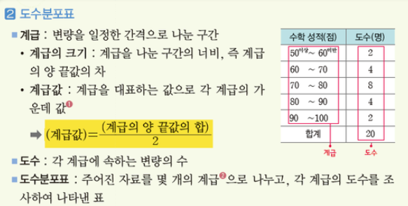
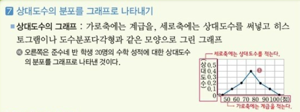
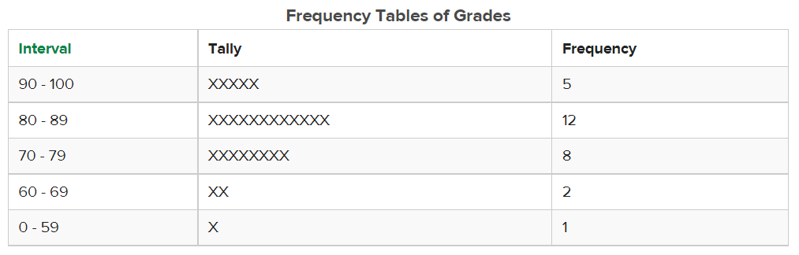
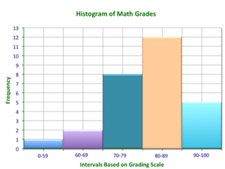
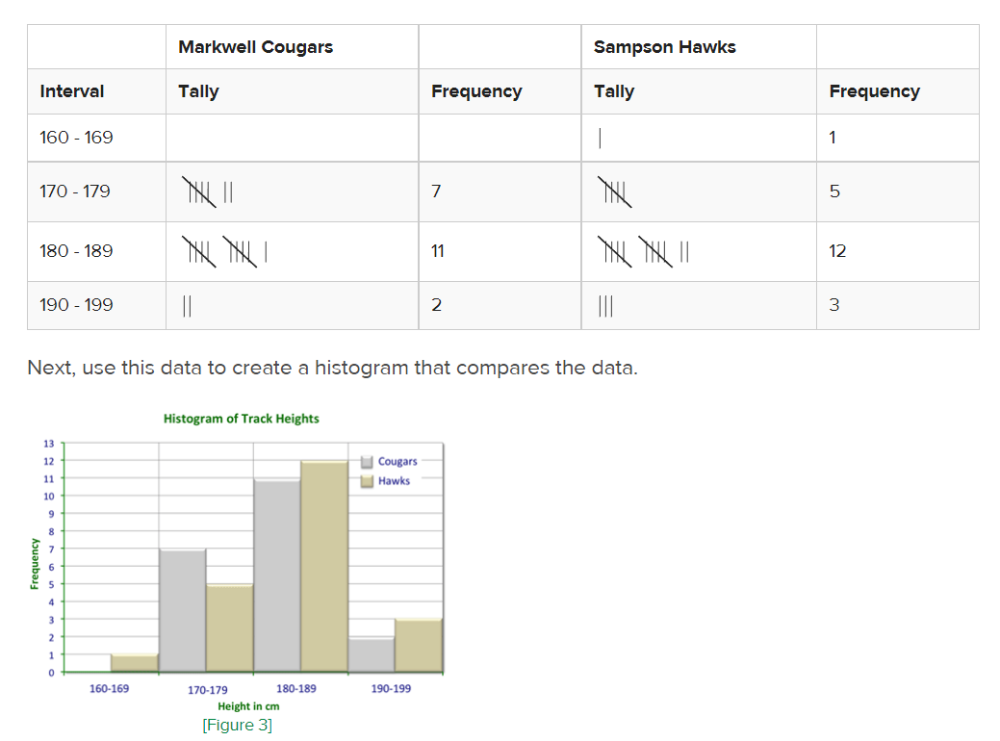

02 통계교육 온-오프라인 연계
(온-오프라인 교육의 자연스런 융합)
앞서서 통계교육과정에서
- 교재학습
- 도구실습
- 수행평가학습
과정에서 뭔가 부족하다고 느끼는 부분이 있다고 말씀드렸습니다.
현업에서도 비슷한 일들이 일어납니다.
어떤 업무에서 장애 또는 과실이 일어났을 때 사후분석을 해보면 각자의 부서에서 매뉴얼대로 할일은 다 했다.
문제는 재발방지나 더 나은 해법을 도출해내기가 어려울 때가 있습니다.
왜그럴까요?
이는 각각의 도구나 역할은 흠 잡을 것이 없지만 그 각각의 연결이 매끄럽지 않기도 하고 연결부분에 대한 책임의소재와 노력이 단기간에 눈에 보이지 않기 때문이기도 합니다.
현행 이론 학습의 틀은
벗어날 수 없고 벗어나서도 안되는 부분이라고 생각합니다. 중,고등학습과정은 활용을 위한 이론 학습이기 보다 기준을 삼아야 하는 객관적이고 검증된 도구이기 때문입니다.
이상적인 기준에 맞추어 지식을 활용하고 적용하게 만들기란
현장에 주어진 시간과 고려해야할 재반사항이 많기 때문에 하면좋고 안해도 무관한 목표가 될 수 있습니다. 이는 결국 교육현장에서 교사, 학생들에게 실제적인 것이 아니라는 것이지요.
그럼에도 불구하고
교육현장에선 상황에서 우리가 생각해봐야 할 것이 있습니다. 현재 당장 필요한 것을 채우는 것은 최우선으로 하되 조금뒤의 미래에 학생들이 실제적인 통계 활용에 대한 방향성을 가지게 된다면 어느 분야에서일지 모르지만 그 역할이 일어날 재해예방이나 현상에 대한 이해를 돕는 도구로 활용할 수 있는 가능성을 가질 수 있게 된다면 그 자체적으로도 의미가 있을 것입니다.
온-오프라인 학습 보강 방안
일반 중고등 수학 이론보다 통계이론은 현실사례에 적용하여 보기가 좋습니다.
현재 학습과정에서 통계이론 의 현실에서의 사용과 반영을 좀 더 현세대에 맞게 재구성하는 방식으로 보강을 한다면 미래 사회에 필요한 데이터/AI 활용의 사회를 살아가는데 도움이 될것이라고 생각합니다.
교재 학습에서
보강되어야 할 부분은
수학한자 용어부분의 단순 순화를 넘어 참고할 수 있는 용어의 대역을 넓히면 좋을 것입니다.
즉, 교과서에서는 누락된 한자, 영어의 대역표기를 해주면 좋겠습니다.
교과서를 바꾸는 과정은 매우 복잡하고 시간이 많이 드는 반면 보강학습 교안을 디지털화 하여 제공 할 수 있다면 더 없이 좋을 것입니다.
예를 들어 도수분포표는 관련분야이 있는 사람이 아니면 무엇을 표현하고 싶은지 이해하기 어려운 수준으로 줄인 망가진 수학 표기방식중 하나라고 생각합니다.
빈도수의 분포표(Frequency Table)이라고만 표현해줘도 도구의 목적이 무엇인지 유추해내기 쉬울 것이라고 보여집니다.
대다수의 교과서에서는 공식에 대응하기 위한 용어의 정리 수준이기도 하고 용어 부분에서 이탈율이 높기 때문에 그다음 과정은 알수없는 단어에 답을 채우는 형식을 벗어나기 힘듭니다.
비슷한 수준의 외국 디지털 교과서를 참고시켜줍니다.
영어로 된 문장을 해석하라는 것은 말도 안되겠지만 구글 번역 기능의 도움을 받아서 번역한 것을 보여주는 것도 도움이 될 것이라 여겨집니다.
국내 수학 강의 일부분을 발췌하였습니다.
열 명의 1학기 기말고사 시험 수학 점수가 있어요. 92,84,88,76,96,72,92,84,68,96점을 받았다고 보죠.
점수 대푤로 몇명이나 있는지 표로 만들어볼께요.도수분포표에 대한 설명


외국 디지털 교과서의 도수분포표의 시작부분을 발췌한 부분입니다.
The coach of the Markwell Cougars track team wants to compare the heights of his team to that of their rivals, the Sampson Hawks.
He was wondering if there is a correlation between speed and height.


차이점은?
차이점은 무엇일까요? 여러가지 자료를 준비하면서 여기저기 중등수학 1학년 통계 과정에 대한 것을 많이 찾아 보았지만 국내 강의 및 교재는 대부분 비슷하게 구성되어 있었습니다.공식을 외우고 표를 만들고 그래프를 그리는것이 주요목적으로 되어 있습니다.
외국 통계 교육 과정을 에서 도움을 얻을 수 있는부분은 짤막하지만 무엇을 하기 위해 즉, 지식의 활용 용도가 기술 되어 있음입니다.
또한 그래프를 표현하는 방식에도 차이가 있습니다. 좀 더 읽기 쉽게 구성이 되어 있고 설명이 표에 잘 붙어 있습니다. 두개의 도수 분포표를 만들어 비교해봄 으로써 통계 분석을 할 수 있는 사례를 만들어 주었습니다.
내가 배우는 지식은
나의 실생활에 사용해볼 수 있는 것인가? 활용해서 나의 삶의 부분을 들여다 볼 수 있을까? 이것을 제공해 줄 수 있다면 그 지식은 입시도구외에도 실제적인 지식으로 승화 할 수 있을 것입니다.
통계 이론을 현실에 적용할 수 있는 사례를
수집하고 만들어보는 일은 그리 어려운 일이 아닐 것입니다.
- 일주일간 통학시간과 취침시간의 관계
- 좋아하는 아이돌과 사용하는 음악매체와의 관계
- 친구를 만나는 횟수와 용돈소비
- 성적과 학원 다니는 시간과의 관계
등 일상생활에서의 데이터세트는 무궁무진하고 그 소재는 교사나 교과서보다 학생들이 더 많이 가지고 있고 그것들이 자신들의 삶을 들여다 볼 수 있다고 한다면 흥미를 가지고 접근이 가능할 것이고 무엇보다도 지식이 실체화가 될 수 있는 기회가 될 것입니다.
잘 만들어 져있는 도구이지만
실습과 이론과의 동떨어진 실습이 학생들에게 많을 도움이 되지 않습니다. 단순히 숫자를 입력하고 결과를 보는 것에 불가하게 되는 것입니다.
전자계산기가 일상에 도움이 되는 이유는 쇼핑을 할 때 얼마나 싸게 사는 거지에 대한 비교를 빠르게 하기 위한 도구이기 때문입니다. 이와 마찬가지로 통계 실습도구도 단순 계산 결과와 표를 그리는 것으로는 부족합니다.
숫자가 표로 나온다
이것이 가지는 의미가 어떤것인지 표를 손으로 그리기 어려워서 사용해야 할 도구인지 판단하기 어렵습니다. 즉, 도구의 활용용도가 과제의 숫자를 표로 그리기로 제안하여 제공하는 것에는 아쉬움이 많이 남습니다. 비록 큰 돈이 되지 않는다하더라도 누군가는 그것을 위해 투자하고 고민하여 개선하는 일을 지속하면 좋을 것이라고 보여집니다.
이론의 실습결과를 현실에 반영
실습결과르 현실에 반영할 수 있도록 하기위한 템플릿을 만드는 일은 어려운 일은 아닐 것입니다. 하지만 구조화한 그 템플릿을 다양한 사례로 변형하여 학생들 스스로가 현실생활의 사례를 분석해볼 수 있도록 기회를 제공해준다면 이것보다 더 좋은 것은 없을 것입니다.
여러가지 도구가 있을 것이지만 그중에 하나의 사례를 들어본다면
디지털 글쓰기 플랫폼을 이용하여
R마크다운을 이용한 디지털 글쓰기 플랫폼을 이용하여 템플리트를 만들고 그것을 각자의 상황에 맞게 수정하여 보고 분석하여 볼 수 있도록 합니다. 교사는 분석한 부분에서 보강할 부분이나 방향성을 수정해줌으로 학생들이 실제적으로 활용할 수 있도록 하여 줍니다.
수행의 과정은 직장 프로세스에 비해 느슨하게 진행이 되므로 한학기중 과제로 진행한다면 학생들이 통계에 대한 활용이나 이해도가 깊어질 것으로 여겨집니다.
Reference
https://flexbooks.ck12.org/
https://ebsmath.co.kr/easyTong